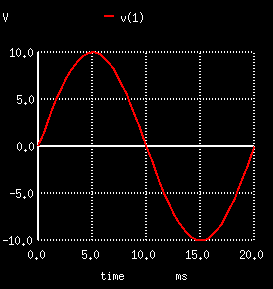
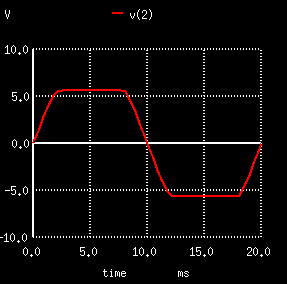
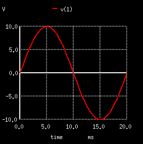
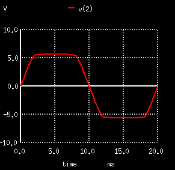

DXXXXXXX n+ n− mname <area =val> <m=val> <pj =val> <off> <ic =vd > + <temp=val > <dtemp=val >
| No. | Name | 解析 |
|---|---|---|
| 1 | n+ | 二极管元件的正极节点 |
| 2 | n- | 二极管元件的负极节点 |
| 3 | mname | 二极管模型名，可以省略，使用缺省参数，一般不省，多个二极管可以使用相同的模型 |
| 4 | area | pn结的面积因子（系数），参见前面的数学模型，主要影响 饱和反向电流值（ saturation current），可以省略，缺省值=1.0 |
| 5 | m | 是area和pj的乘积因子，缺省=1.0 |
| 6 | pj | pn结的周长因子perimeter， 主要影响侧边反向饱和电流（sidewall saturation current）及其对应的电容（and it’s associated capacitance），缺省=1.0 |
| 7 | off | 若有off则表示在DC分析中可以指定一个初始的条件（二极管两边的初始电压），由下面的IC来指定 |
| 8 | IC | 二极管初始电压，仅当指定off（DC分析）或在.tran中指定的时候（TRAN分析）有效 |
| 9 | temp | 工作温度，单位是摄氏度，会覆盖.option上的设置 |
| 10 | dtemp | 工作温度（相对值），摄氏度 |
DBRIDGE 2 10 DIODE1
DCLMP 3 7 DMOD AREA=3.0 IC =0.2
* practice and think 14.3.7.a vin 1 0 3v r1 1 2 1k r2 2 0 1k d1 0 2 DMOD .model DMOD D .op .control run print all .endc .end |
* practice and think 14.3.7-b vin 1 0 3v *for test v_i_r2 2 99 0v r1 1 2 1k r2 99 0 1k d1 2 0 DMOD .model DMOD D .op .control run print all .endc .end |
结果：
v(1) = 3.000000e+00 v(2) = 1.500000e+00 v1#branch = -1.50000e-03 |
结果：
v(1) = 3.000000e+00 v(2) = 6.682658e-01 v(99) = 6.682658e-01 v1#branch = -2.33173e-03 v_i_r2#branch = 6.682658e-04 |
|  | |
* practice and think 14.3.8 vi 1 0 SIN(0 10v 50) v2 3 0 5v v3 0 4 5v r1 1 2 10k d1 2 3 DMOD d2 4 2 DMOD .model DMOD D .tran 1ms 20ms .control run plot v(1) v(2) .endc .end |
 |
|  | |
* think 14.4.3 v1 1 0 SIN(0 10v 50hz) r1 1 2 10k dz1 3 2 DMOD dz2 3 0 DMOD .model DMOD D(BV=5v IK=18mA) .tran 1ms 20ms .control run plot v(1) v(2) .endc .end |
 |